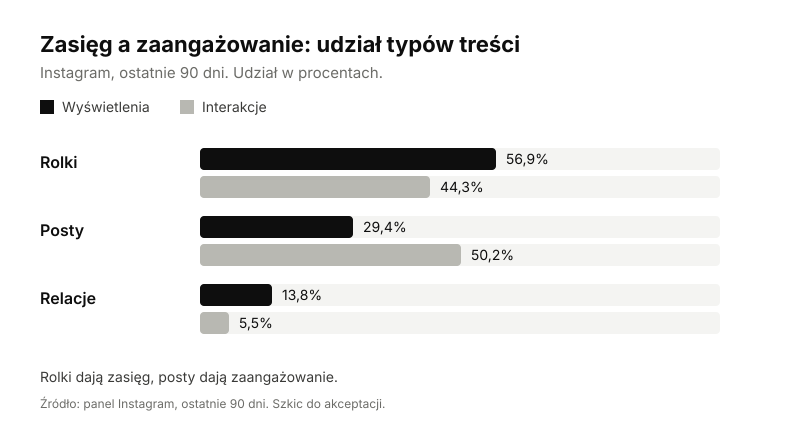

Case study · Social media
Analiza kanałów social media Norgips Polska
Dane z 90 dni pokazują, że treści docierają głównie do osób spoza listy obserwujących. Rolki dają zasięg, a posty zaangażowanie. Na tej podstawie zaproponowałam kolejne testy.
Kontekst
Kanały marki Norgips Polska: Facebook, Instagram, YouTube, TikTok i LinkedIn. Ten materiał obejmuje dane z Instagrama za ostatnie 90 dni oraz zasięg z Facebooka z tego samego panelu. Dane z pozostałych kanałów nie są tu uwzględnione. Celem analizy było sprawdzenie, czy treści docierają do nowych osób, czy zamieniają się w społeczność obserwujących i które formaty działają najlepiej.
Moja rola
Koordynatorka po stronie Norgips Polska we współpracy z agencją social media, od 1 lipca 2026. Od tego samego czasu opiekuję się również social mediami marki Knauf . Zakres przy Norgips:
- akceptacja postów przed publikacją,
- przekazywanie pomysłów na treści i kierunku komunikacji,
- pilnowanie jakości usług i zgodności contentu z brandbookiem,
- zarządzanie budżetem i decyzje o dodatkowych działaniach,
- koordynacja pracy agencji przy nagraniach Akademii Norgips, w tym akceptacja scenariusza we współpracy z project managerem.
Wyniki (90 dni, Instagram)
- 350 254wyświetleń
- 98,8%wyświetleń od osób nieobserwujących
- 1303interakcji
- 85,8%interakcji od osób nieobserwujących
Facebook: 25 269 wyświetleń w tym samym okresie.

Wnioski
- Zasięg pochodzi z odkrywania, nie ze społeczności. Prawie wszystkie wyświetlenia i interakcje to osoby spoza listy obserwujących.
- Rolki dają zasięg, posty dają zaangażowanie. Rolki mają ponad połowę wyświetleń, a posty więcej interakcji niż rolki.
- Najmocniejsze materiały to wideo z osobą w terenie i poradniki oraz grafiki z konkretnymi cechami produktów. Trzy najpopularniejsze materiały to wideo.
- Relacje są najsłabszym formatem pod względem zaangażowania.
Rekomendacje do przetestowania
- Dodać w rolkach wezwanie do posta lub karuzeli z dłuższą wersją tematu i zmierzyć udział interakcji od obserwujących oraz liczbę nowych obserwujących.
- Zachować serię grafik z zaletami produktów i rozwijać ją w kolejnych tematach.
- Ograniczyć relacje albo zmienić ich format, np. na krótkie pytania do społeczności.
- Przez dwa tygodnie testować jedną zmianę naraz.
Ograniczenia
- Dane obejmują 90 dni, a nie cały okres od stycznia 2023.
- Brak danych o promocji płatnej i o publikacjach poza panelem.
- Etykieta „Widzowie” (167 285) nie ma definicji w panelu i nie jest interpretowana.
- Wnioski opisują zachowanie kanału. Przyczyny wymagają testów.
Szkic. Przed publikacją: potwierdzić zgodę na publiczne pokazanie danych, zdecydować o nazwie agencji (obecnie „agencja social media”) i sprawdzić spójność z brandbookiem.